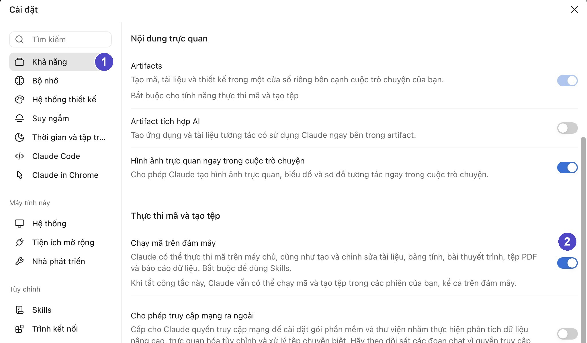
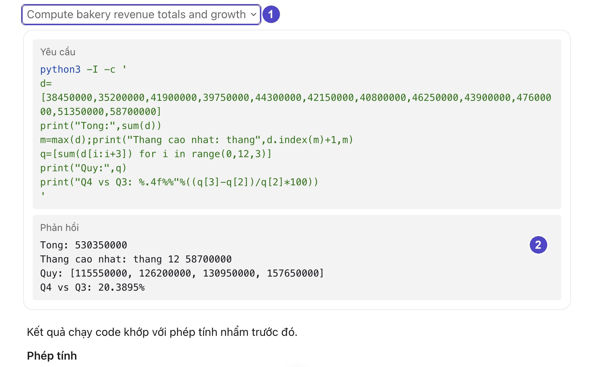
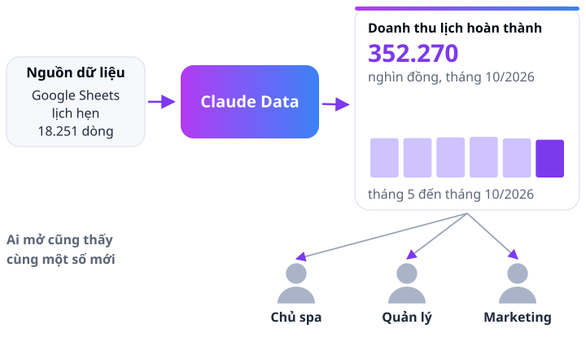
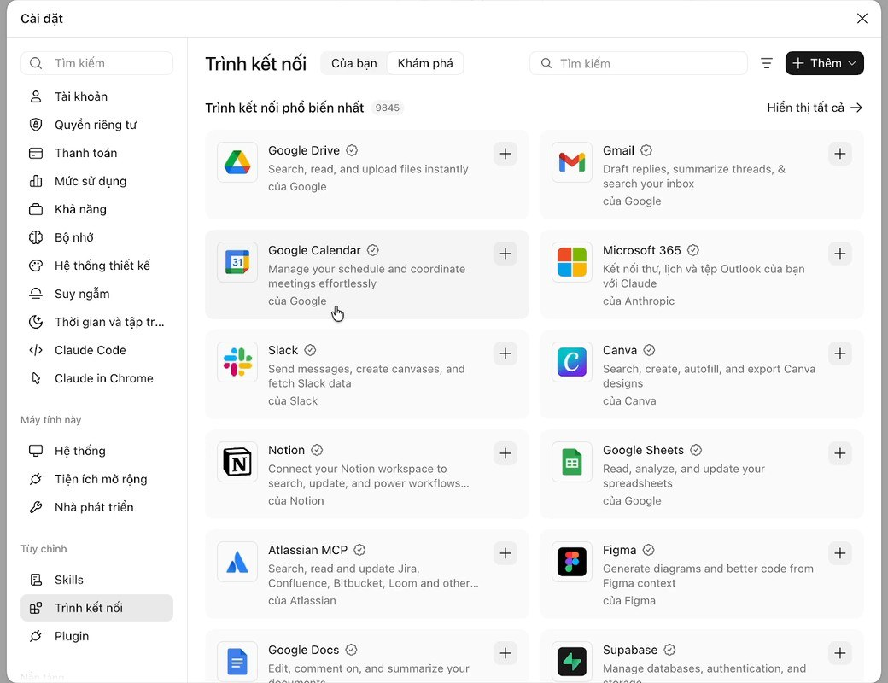
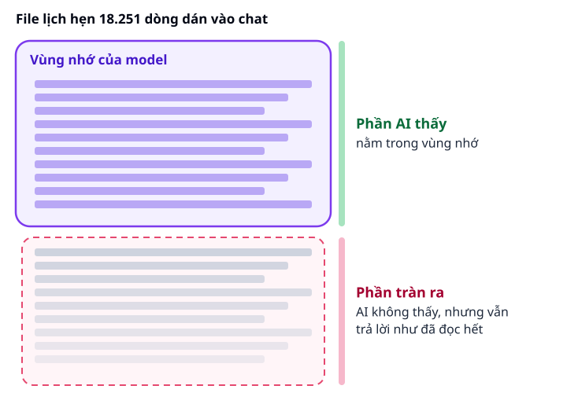

AI đọc số, viết kết luận trước và dựng dashboard tự cập nhật, để bạn đọc nhanh rồi ra quyết định.
CSV, 93 dòng. Mỗi dòng là một ngày của một chiến dịch: chi phí, lượt hiển thị, kết quả, lịch đặt.
Excel, 2 sheet. Có ô gộp, dòng tổng phụ và dòng ghi chú như file nhập tay thật.
CSV, 18.251 dòng, từ 01/2025 tới 10/2026. Mỗi dòng một lịch hẹn.
Sau bài này, từ file xuất của trình quản lý quảng cáo, bạn có báo cáo tháng có kết luận, số chính và việc tiếp theo, rồi bạn duyệt.
| ngay | chien_dich | muc_tieu | chi_phi_vnd | hien_thi | luot_nhap | ket_qua | dat_lich_thanh_cong | |
|---|---|---|---|---|---|---|---|---|
| 2 | 2026-10-01 | Liệu trình trị mụn - tin nhắn | Tin nhắn | 210000 | 11127 | 271 | 69 | 33 |
| 3 | 2026-10-01 | Gói chăm sóc da 3 buổi - form | Form | 237000 | 15966 | 320 | 33 | 13 |
| 4 | 2026-10-01 | Gói giờ vàng - lượt xem | Lượt xem | 143000 | 9046 | 198 | 0 | 0 |
| 5 | 2026-10-02 | Liệu trình trị mụn - tin nhắn | Tin nhắn | 292000 | 14891 | 297 | 57 | 26 |
| 6 | 2026-10-02 | Gói chăm sóc da 3 buổi - form | Form | 295000 | 13359 | 315 | 34 | 12 |
| 7 | 2026-10-02 | Gói giờ vàng - lượt xem | Lượt xem | 115000 | 5898 | 145 | 0 | 0 |
Ảnh chụp trang trợ giúp Anthropic "Create and edit files with Claude", ngày 20/11/2026. Khung số do The AI Growth vẽ thêm.
Vào Cài đặt → Khả năng. Bật công tắc Chạy mã trên đám mây (số 2 trong ảnh).
Tắt công tắc này thì Claude không tạo file và không chạy code để tính.

Ảnh chụp app Claude: Cài đặt → Khả năng (1), công tắc Chạy mã trên đám mây (2).
Mỗi lịch đặt, 1–15/10
3.742.000đ cho 165 lịch
Mỗi lịch đặt, 16–31/10
6.480.000đ cho 192 lịch
Dữ liệu mẫu giả định của Spa An Nhiên. Số tính bằng code từ file quảng cáo 93 dòng.
| Chiến dịch | Chi phí tháng 10 | Lịch đặt thành công |
|---|---|---|
| Liệu trình trị mụn · tin nhắn | 8.177.000đ | 834 lịch · 9.274đ → 10.383đ mỗi lịch |
| Gói chăm sóc da 3 buổi · form | 10.222.000đ | 357 lịch · 22.679đ → 33.750đ mỗi lịch |
| Gói giờ vàng · lượt xem | 3.750.000đ | 0 lịch (chiến dịch chạy lượt xem) |
Dữ liệu mẫu giả định. Mũi tên: nửa đầu tháng → nửa sau tháng.
| Thứ cần duyệt | Cách kiểm | Ví dụ ở spa |
|---|---|---|
| Số khớp file | Tự kiểm 1–2 con số tổng | Tổng chi phí 22.149.000đ |
| Nhận định có số đi kèm | Mỗi câu nhận xét phải có ít nhất một số | "Gói da kém" → kèm 22.679đ lên 33.750đ |
| Việc tiếp theo hợp tình hình thật | Đối chiếu chuyện nằm ngoài file | Spa nghỉ sửa phòng 12–14/10: AI không biết |
"Kém so với cái gì, và số nào cho thấy điều đó?"
Nhận định không có số đi kèm thì chưa dùng được để ra quyết định.
Nhanh nhất, ai cũng làm được, có từ gói Free.
Nếu nền tảng có connector cho Claude. Module 06 dạy cách nối.
Claude đọc trang báo cáo ngay trên trình duyệt. Cần gói trả phí.

Ảnh chụp app Claude ở một ví dụ khác: bấm dòng xám (1) để mở khối code, xem phần Yêu cầu và kết quả (2).
Sau bài này, bạn biết 4 kiểu file làm AI đọc sai, bắt AI tả file trước khi tính, và tự đối chiếu một con số.
Cộng cả cột "Thành tiền"
gồm cả dòng tổng phụ
Chỉ cộng dòng dịch vụ
số đúng
Đơn vị nghìn đồng. Dữ liệu mẫu giả định; số tính bằng code từ file Excel mẫu.
| A | B | C | D | E | |
|---|---|---|---|---|---|
| 3 | Nhóm dịch vụ | Dịch vụ | Số lượt | Đơn giá | Thành tiền |
| 4 | Chăm sóc da | Chăm sóc da cơ bản | 33 | 250 | 8.250 |
| 5 | Trị mụn chuẩn y khoa | 61 | 450 | 27.450 | |
| 6 | Cấy dưỡng chất | 82 | 600 | 49.200 | |
| 7 | Cộng chăm sóc da | 176 | 84.900 | ||
| 8 | Thư giãn | Massage body 60 phút | 33 | 350 | 11.550 |
| 9 | Gội đầu dưỡng sinh | 131 | 120 | 15.720 | |
| 10 | Cộng thư giãn | 164 | 27.270 | ||
| 11 | Gói liệu trình | Gói da 3 buổi | 127 | 690 | 87.630 |
| 12 | Gói da 5 buổi | 113 | 1.050 | 118.650 | |
| 13 | Cộng gói liệu trình | 240 | 206.280 | ||
| 14 | TỔNG CỘNG | 318.450 | |||
| 16 | Ghi chú: tháng 10 có 3 ngày nghỉ sửa phòng (12-14/10). | ||||
Tên nhóm chỉ nằm ở dòng đầu của nhóm. Các dòng dưới để trống ô A.
"Cộng …" và "TỔNG CỘNG" nằm chung cột với số dịch vụ.
Tên nhóm chỉ nằm ở dòng đầu, các dòng sau trống.
Dòng "Cộng …" bị cộng thêm lần nữa.
Mỗi sheet một kỳ. AI có thể chỉ đọc sheet đầu.
Bị coi như một dòng dữ liệu.
Tên sheet, số dòng, tên cột, ô nào gộp, dòng nào là tổng hoặc ghi chú.
Lấy dòng nào, bỏ dòng nào, công thức gì.
Cho phép Claude trả lời "mình không chắc", không đoán.
Ảnh chụp tài liệu Anthropic "Reduce hallucinations", ngày 20/11/2026: cho phép Claude nói "tôi không biết" để giảm trả lời bịa.
| Con số | Claude tính (chỉ dòng dịch vụ) | Bạn tính bằng SUM |
|---|---|---|
| Doanh thu tháng 9 | 193.100 | =SUM(E4:E6,E8:E9,E11:E12) → 193.100 |
| Doanh thu tháng 10 | 318.450 | =SUM(E4:E6,E8:E9,E11:E12) → 318.450 |
Bạn tin phần còn lại hơn.
Nhờ Claude giải thích cách tính từng bước, lấy những dòng nào.
Claude phải kể đủ: 2 sheet, ô gộp ở cột A, các dòng "Cộng …", dòng "TỔNG CỘNG" và dòng ghi chú.
Sau bài này, bạn có khung báo cáo một trang và lưu nó thành Skill, để mọi báo cáo của đội theo cùng một mẫu.
1. Chiến dịch trị mụn: chi phí 8.177.000đ, 458.963 hiển thị, 8.539 lượt nhấp, 2.061 kết quả, 834 lịch đặt.
2. Chiến dịch gói da: chi phí 10.222.000đ, 575.319 hiển thị, 10.634 lượt nhấp, 928 kết quả, 357 lịch đặt.
3. Chiến dịch giờ vàng: chi phí 3.750.000đ, 214.116 hiển thị, 3.985 lượt nhấp…
… (kết luận nằm ở cuối trang)
Số chính: 22.679đ → 33.750đ mỗi lịch đặt gói da (1–15/10 so với 16–31/10).
Cần anh chị quyết: giữ hay dừng chiến dịch giờ vàng (3.750.000đ, chưa ra lịch đặt).
Ví dụ minh hoạ trên dữ liệu mẫu giả định của Spa An Nhiên.
Người quản lý đọc nhiều báo cáo mỗi ngày. Họ cần biết ngay: có vấn đề gì, nghiêm trọng tới đâu, cần họ làm gì.
Giống bản tin thời sự: đọc tin chính trước, chi tiết sau.
| Phần | Viết gì | Ví dụ ở spa |
|---|---|---|
| 1 · Kết luận | 1–2 câu | Gói da tốn thêm 49% cho mỗi lịch đặt từ giữa tháng. Đề xuất đổi mẫu quảng cáo trước 25/11. |
| 2 · Số chính | 3–5 số, có so sánh kỳ trước | Mỗi lịch gói da 22.679đ → 33.750đ. Tổng chi phí 22.149.000đ. |
| 3 · Vì sao | Nguyên nhân có số đi kèm | Chi phí gói da nửa sau tăng 73%, lịch đặt chỉ tăng 16%. |
| 4 · Việc tiếp theo | Ai, làm gì, khi nào | Người phụ trách quảng cáo đổi 2 mẫu quảng cáo gói da trước 25/11. |
| 5 · Việc cần sếp quyết | Câu hỏi có lựa chọn | Giữ hay dừng chiến dịch giờ vàng: 3.750.000đ, chưa ra lịch đặt. |
Sau bài này, bạn nối một nguồn dữ liệu, dựng dashboard đầu tiên, xem câu truy vấn sau mỗi biểu đồ và chia sẻ cho đúng người.

Minh hoạ trên dữ liệu mẫu giả định. Claude Data có đọc Google Sheets qua connector Drive không: đang kiểm, xem slide "Nối nguồn dữ liệu".
Ảnh chụp trang trợ giúp Anthropic "Get started with Claude Data", ngày 20/11/2026. Khung số do The AI Growth vẽ thêm.
BigQuery, Snowflake, Databricks và vài loại khác.
Ví dụ CRM Salesforce.
Trang hỗ trợ ghi rõ dashboard không dùng sheet làm nguồn.

Ảnh chụp app Claude: Cài đặt → Trình kết nối, nơi nối nguồn dữ liệu (chụp ngày 08/11/2026).
Ảnh chụp trang trợ giúp Anthropic "Get started with Claude Data", ngày 20/11/2026. Khung số do The AI Growth vẽ thêm.
Cài đặt → Trình kết nối: nguồn đã nối.
Tab Artifacts → Data, gõ câu hỏi về doanh thu theo tháng.
Claude dựng dashboard có biểu đồ doanh thu.
Xem câu truy vấn và giờ cập nhật.
Chọn mời đúng người. Dừng ở đây, chưa gửi.
Sau bài này, bạn phân tích một file 18.000 dòng bằng cách đếm trước, chia theo kỳ, tính từng phần và đối chiếu tổng.
Vùng nhớ có hạn. Theo mình, dán quá nhiều dòng thì AI dễ tóm hoặc sót phần giữa.
Không phụ thuộc vùng nhớ. File tối đa 30MB.
Gói trả phí: model mới nhất nhận tới 1 triệu token (trang trợ giúp Anthropic, kiểm 20/11/2026).
Chat gần chạm giới hạn thì Claude tự tóm tắt phần cũ, nên chi tiết đầu có thể mất.

| ma_lich | ngay | gio | dich_vu | don_gia_nghin | nhan_vien | nguon_khach | trang_thai | khach_moi | |
|---|---|---|---|---|---|---|---|---|---|
| 2 | LH000001 | 2025-01-01 | 13:00 | Massage body 60 phút | 350 | NV03 | Zalo | Hoàn thành | Không |
| 3 | LH000002 | 2025-01-01 | 12:30 | Chăm sóc da cơ bản | 250 | NV06 | Google Maps | Hoàn thành | Không |
| 4 | LH000003 | 2025-01-01 | 10:30 | Cấy dưỡng chất | 600 | NV03 | Hoàn thành | Không | |
| 5 | LH000004 | 2025-01-01 | 15:30 | Trị mụn chuẩn y khoa | 450 | NV03 | Google Maps | Hoàn thành | Không |
| 6 | LH000005 | 2025-01-01 | 15:30 | Gói da 3 buổi | 690 | NV02 | Hoàn thành | Không | |
| 7 | LH000006 | 2025-01-01 | 14:30 | Trị mụn chuẩn y khoa | 450 | NV04 | Google Maps | Huỷ | Không |
| … | … còn 18.245 dòng, tới LH018251 ngày 2026-10-31 | ||||||||
| Bước | Claude làm | Bạn kiểm (file mẫu) |
|---|---|---|
| 1 · Đếm | Đếm dòng, cột, giá trị lạ trước khi tính | 18.251 dòng, 9 cột, 0 ô trống |
| 2 · Chia | Chia theo tháng hoặc theo nhóm | 22 tháng, 01/2025 tới 10/2026 |
| 3 · Tính | Tính từng phần | Tháng 10/2026: 352.270 nghìn đồng |
| 4 · Đối chiếu | Cộng các phần, so với tổng cả file | 7.922.760 = 7.922.760, chênh 0 |
Dữ liệu mẫu giả định. Chỉ tính lịch "Hoàn thành": 15.783 lịch. Số tính bằng code.
Ảnh chụp trang trợ giúp Anthropic "Get started with Claude Sheets", ngày 20/11/2026. Khung số do The AI Growth vẽ thêm.
Một mẫu báo cáo kết luận trước, số sau, việc tiếp theo. Một Skill báo cáo cho cả đội. Và cách để AI tính đúng trên file lớn.